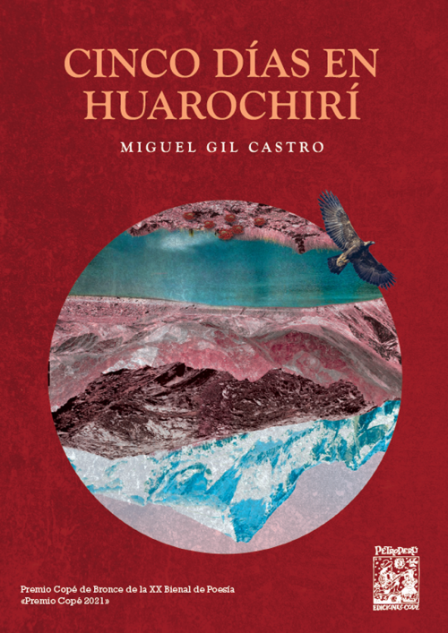

Poemario · Premio Copé de Bronce 2021

Cinco días en Huarochirí es una reescritura poética del Manuscrito de Huarochirí, el texto quechua más importante que tenemos. La idea era devolverle el pulso: que Pariacaca y los cinco huevos sonaran cercanos, como historias que todavía nos dicen algo.
Para lograrlo, investigué. Entrevisté lectores, construí una user persona del peruano de hoy y busqué los patrones simbólicos que seguimos repitiendo sin darnos cuenta. Usé IA para ordenar el caos de datos cualitativos. Y después escribí. Detrás de cada decisión de lenguaje hay una decisión de producto: a quién le hablo, qué necesita, cómo hago que se sienta parte de esto.